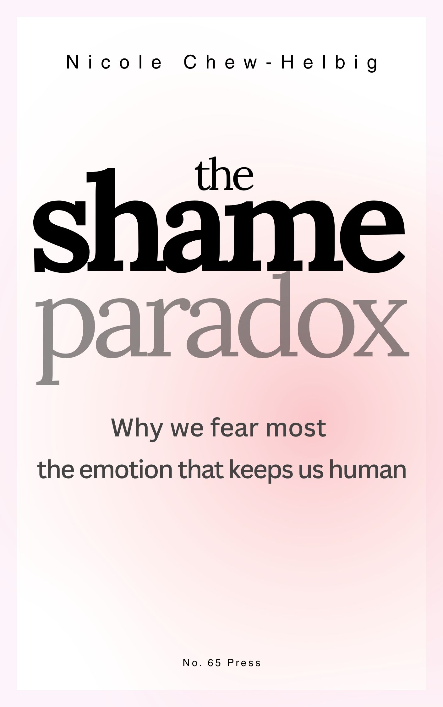

Why We Fear Most the Emotion That Keeps Us Human
Forthcoming — Manuscript in Editing
Publisher t.b.a.
Through neuroscience, a startling reinterpretation of Genesis, and three clinical stories that stay with you long after reading, this book traces shame from infant neurobiology to its place in consciousness itself — arguing that the emotion we spend our lives fleeing is the one that makes us irreplaceably human.
Shame marks us as fundamentally relational beings. Unlike guilt, which concerns what we've done, shame strikes at who we are — our very belonging in the human community. Yet because shame hurts so acutely, we develop elaborate defences against feeling it. Fear of shame paralyses us; dissociation from shame drives addictions and perpetual conflict. We do almost anything to avoid the unbearable feeling that we don't belong.
This is shame's paradox: the very emotion that confirms our need for others becomes what drives us into isolation.
“What makes humans irreplaceable to each other, even in an age of artificial intelligence?”
The Shame Paradox moves between clinical practice, neuroscience, philosophy, and memoir — drawn to the questions that sit at the edge of what psychotherapy can articulate. Where shame meets consciousness. Where relationship meets moral life. Where the body knows what words cannot yet say.
Where it began, where it stands, and what comes next
If this book speaks to something you recognise, leave your email below. You'll hear from me when there's news — no noise, no frequency.
Connect to your email service